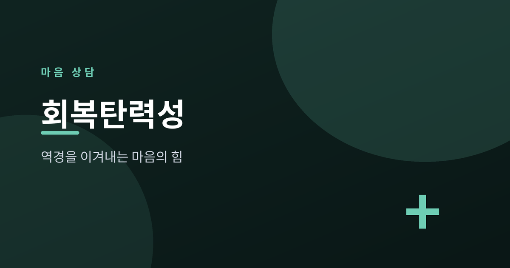
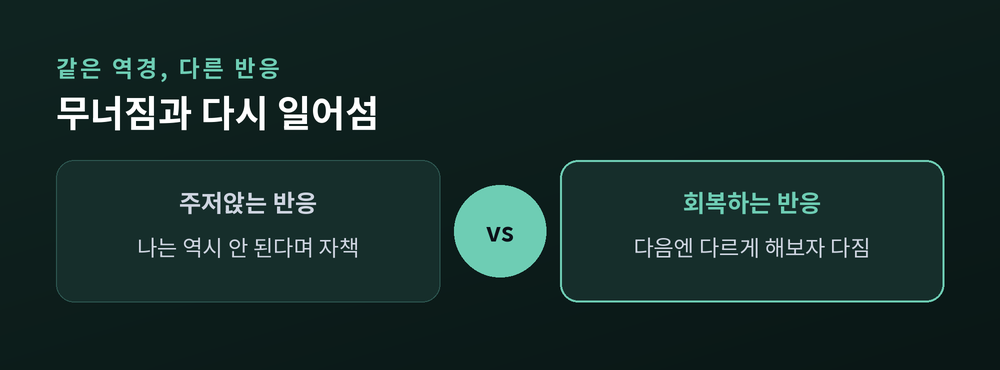
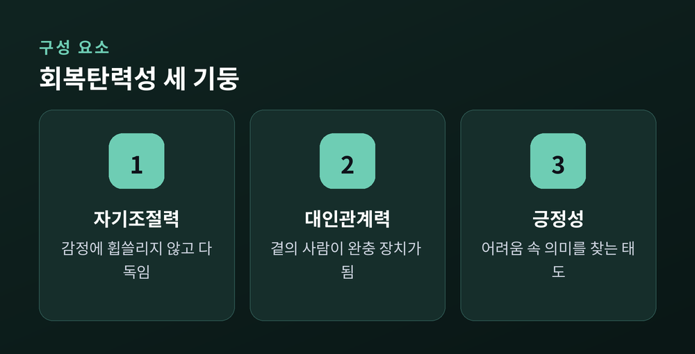
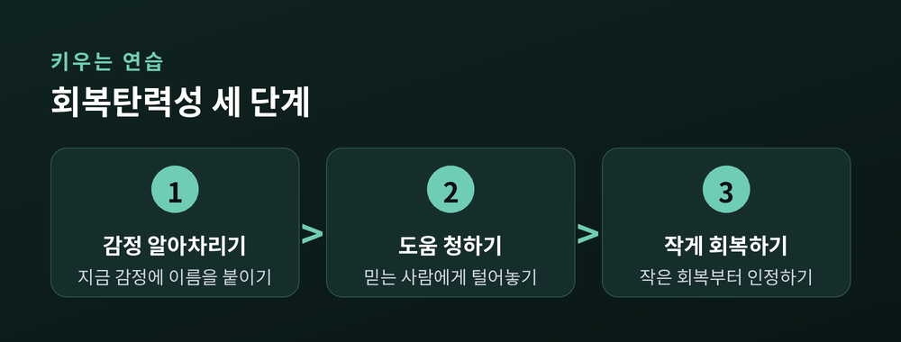

역경을 이겨내는 마음의 힘

살다 보면 누구에게나 힘든 시기가 찾아옵니다. 그런데 같은 어려움을 겪어도 어떤 사람은 오래 주저앉고, 어떤 사람은 비교적 빨리 제자리로 돌아옵니다. 이 차이를 설명하는 개념이 회복탄력성입니다. 오늘은 회복탄력성이 무엇인지, 어떤 요소로 이뤄지는지, 그리고 일상에서 어떻게 키워갈 수 있는지를 정리해 보겠습니다.
회복탄력성은 역경이나 스트레스를 겪은 뒤 원래의 상태로 돌아오는 마음의 힘을 뜻합니다. 영어로는 resilience, 원래 물체가 눌렸다가 튀어 오르는 성질을 가리키는 말입니다. 마음에도 이런 탄성이 있습니다. 중요한 점은 이것이 타고나는 고정된 기질이 아니라는 사실입니다. 회복탄력성은 근육처럼 훈련으로 키울 수 있는 능력에 가깝습니다.

같은 실패를 두고도 반응은 갈립니다. 한쪽은 "나는 역시 안 되는 사람"이라고 자신을 몰아세웁니다. 다른 한쪽은 "이번엔 아쉬웠지만 다음엔 다르게 해보자"고 마음을 다잡습니다. 회복탄력성은 후자의 태도에 가깝습니다. 감정을 억누르는 것이 아니라, 흔들리되 다시 중심을 찾아오는 힘입니다.
회복탄력성은 하나의 능력이 아니라 여러 요소가 어우러진 결과입니다. 크게 세 가지를 꼽을 수 있습니다.

첫째는 자기조절력입니다. 힘든 감정이 밀려올 때 그 감정에 완전히 휩쓸리지 않고 스스로를 다독일 수 있는 힘입니다. 둘째는 대인관계 능력입니다. 어려울 때 도움을 청하고 곁을 내어줄 사람이 있다는 것은 그 자체로 큰 완충 장치가 됩니다. 셋째는 긍정성입니다. 상황을 무조건 밝게만 보라는 뜻이 아니라, 어려움 속에서도 의미와 배울 점을 찾아내는 태도를 말합니다.
그렇다면 어떻게 키울 수 있을까요. 거창한 결심보다 작은 습관이 힘을 발휘합니다.

| 구분 | 낮을 때의 반응 | 키워가는 연습 |
|---|---|---|
| 감정 | 밀려오는 감정에 휩쓸림 | 감정에 이름을 붙여 바라보기 |
| 관계 | 혼자 견디려 함 | 신뢰하는 사람에게 털어놓기 |
| 해석 | 실패를 자기 탓으로 확대 | 상황과 나를 분리해 바라보기 |
| 회복 | 완벽히 돌아오려 조급함 | 작은 회복부터 인정하기 |
가장 먼저 권하고 싶은 것은 감정을 있는 그대로 알아차리는 연습입니다. "지금 나는 불안하구나" 하고 이름을 붙이는 것만으로도 감정과 나 사이에 작은 거리가 생깁니다. 그리고 힘들 때 혼자 견디지 않기를 권합니다. 예전에는 참는 것이 강한 것이라 여겼습니다. 지금은 도움을 청할 줄 아는 것이 더 단단한 힘이라고 봅니다.
회복탄력성은 넘어지지 않는 힘이 아니라, 넘어진 뒤 다시 일어서는 힘입니다.
일상에서는 작은 루틴이 큰 차이를 만듭니다. 하루를 마치며 잘된 일 한 가지를 떠올려 적어보는 습관, 충분한 잠과 규칙적인 몸의 움직임, 그리고 완벽 대신 오늘 할 수 있는 만큼만 해내는 마음가짐입니다. 이런 것들이 쌓여 마음의 탄성을 조금씩 두껍게 만듭니다. 다만 한 가지는 분명히 해두고 싶습니다. 스스로의 노력만으로 감당하기 어려운 무게라면, 전문 상담사나 정신건강 전문가의 도움을 받는 것이 현명한 선택입니다.
정리하면 이렇습니다. 회복탄력성은 타고나는 것이 아니라 길러지는 힘이고, 감정을 다루는 능력과 곁의 사람, 그리고 상황을 해석하는 태도가 함께 만들어냅니다. 오늘부터 감정에 이름을 붙이고, 힘들 때 손을 내미는 작은 연습을 시작해 보시길 권합니다. 완벽하게 무너지지 않는 사람은 없습니다. 다만 다시 일어서는 사람이 있을 뿐입니다.